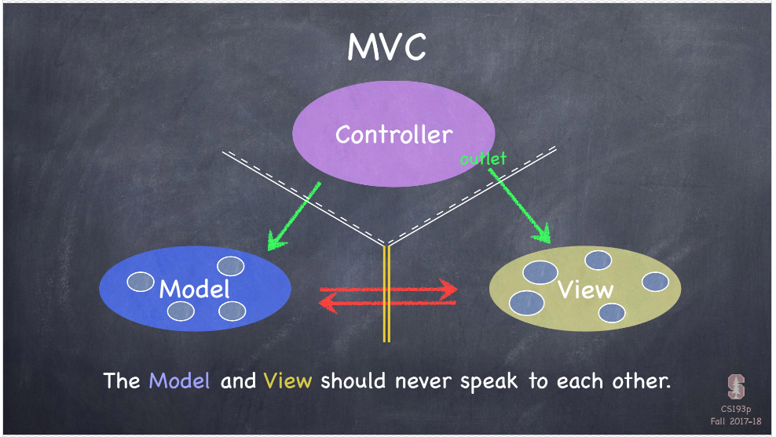

Swift tips and tricks
Passing messages around view controllers
Please find all relevant materials for Standford Programming course cs193p in here
MVC communication: Controller can talk to both Model and View. For the View, it can communicate to the Controller, but in certain ways. Because View are all generic UI objects, to change some of its properties to fits the app's objective, we need to send the UI objects, like buttons and labels back to the controller, let controller to implement its properties like background color, label content etc... so we use Action method to target the function that will be calling when certain UI objects are triggered. Another way to talk to controller is to use Delegate, for more complicated objects like scroll view or tables, we need to let controller know what we are doing at the moment, and controller is responsible for implementing the extra tasks while we are doing this things. Another important thing is that views do not own the data they display, they ask for the controller and controller grab the data from Data source and give it to the View, because if you have 50000 songs in a table, if table owns the data, it will be too big and costy to create such table object. So instead we use Data Source to provide data to the view.
What about Model, can Model talk to the Controller, yes but not directly, because Model is UI independent, and Controller is UI dependent, so if a Model is updated and he wants everybody that is interested to be informed, it will broadcast this information to all the controllers, and those controllers that are listening will be notified and talk to Model and grab the changes. This way is called notifications
One MVC model usually controls one screen on iPhone, and when multiple MVCs are talking to each other, they often treats other MVC as its View. So when one Screen wants to talk to another Screen, it uses delegate!
struct and class: they are similar, contains methods and variables, but struct has no inheritance, Another difference is structs are value types, and classes are reference types, so when we assign it to another variable, it gets copied. Arrays, ints, strings, dictionary are all structs, but swift doesn't make a copy of all of them when we need it, it only copy them when a user modifies it. It's called copy-on-write semantics.
xcode stack view, pin to the upper left corner
try not to use initialiser in the view controller
stride in swift for a range with specific count value
tuples: nothing but a grouping of values, different types of values could be inside the same tuple, vars and methods are not allowed in tuples, its good for return multiple values from a method because a method can only return a single thing.
stored properties(normal properties) and computed properties, with get and set properties, you can have read only computed properties, which only has get method. get and set part will be executed when we get or set the variable.
we use computed property because sometimes we can derive property from other place, like indexOfOneAndOnlyFaceUpCard GET can be derived by looking at all the cards and see if you can get only one card facing up and return that index. And SET can give the card that is facing up to the property. You can omit the GET word if it is a read only computed property
Access control, protecting our internal implementations, by only give other people names of the methods that are allowed to be called.
Internal, usable by any object in my app or framwork, its default
private: callable only within this object
private(set): means its only readable from outside the object, but not settable
filePrivate: accessiable by any object in this source file
public(for frameworks only): can be used by object outside this framework
open(for frameworks only): public AND can sub-class(override)
assertion